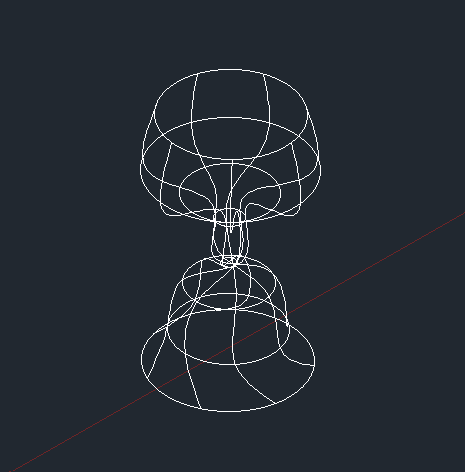

Gianna
Programs
C++
HTML + CSS + JS
Java
Python
French Worksheets
English Pieces
Blogs
Short Stories
Technical Pieces
AutoCad
Media
Animations and Illustrations
Animation Principles
Animation Techniques
Cartoon Characters
DOGUE
Ontario Parks Sweater Designs
Storyboard
The History of Animation
Home
welcome to...
autocad
just a bit of fooling around, but tonnes of fun
Dog House
Donut
Gingerbread Cookie
The Double Trouble Cup
About:
Have you ever put water in your cup after drinking juice and tasted the slight tang of fruit? Introducing the double sided cup to preserve the taste of your drinks without the hassle of washing it every time. Cheers!

Gianna
© Gianna Binder